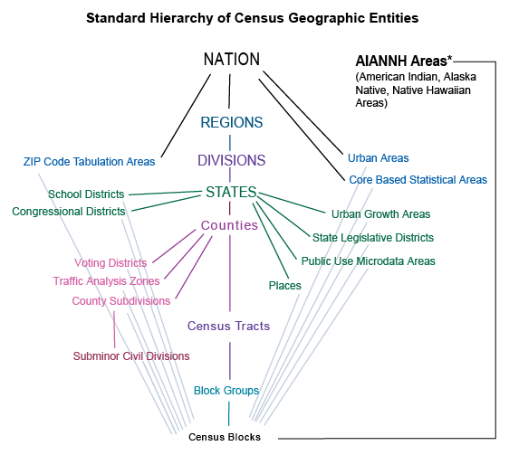

Urban Institute Guide for creating and using geographic crosswalks
Introduction/Background
Context:
Urban researchers often conduct an analysis at a certain geographic scale (e.g. the census tract, zip code, or state).
Many data is provided at different levels of spatial aggregation, or those levels change over time (looking at you, census tracts!).
Thus, we need a need a tool to transform data from one spatial level to another. This is a crosswalk!
A note on nomenclature: (geographic) crosswalks are also called correlation lists, equivalency files, or geographic correspondence files.
Background: Census Geographies and Nesting!
- The Census Bureau releases all data at a series of 27 different geographic levels.
- A key concept is that of nesting. Some census geographies are entirely composed of other census geographies, making aggregation from the smaller to the larger geographic level simple.
- A chart depicting the 27 geographic levels and their relationships to each other can be seen below.

- Note that all census blocks are entirely nested within census block groups, census block groups within census tract, tracts in counties, and counties within states.
- Blocks are generally bounded by visible features or boundaries (like roads!).
Background: Blocks, Block Groups, and Tracts in Depth
- Blocks are statistical entities that tend to be small and are bounded by visible features (e.g. roads, streams, railroad tracks) or non-visible features like city boundaries.
- Block groups are generally defined to contain 600-3000 people.
- Census tracts have between 1200 and 8000 people, and often/ideally close to 4000. Census tract boundaries are made to last over time.
- Because of these population limitations, these geographic levels can change over time. Such changes necessitate crosswalks.
TIGER, FIPS Codes and When you do not need to use a Crosswalk:
The Census Bureau releases spatial data outlining census geography in their TIGER/Line Shapefiles.
In the TIGER/Line Shapefiles, each geographic unit (e.g. a census tract or block) has a unique geographic identifier, or GEOID.
GEOIDs have a great naming convention, some of which we outline below.
| Geographic Level | Structure | Number of Digits | Example Area | Example GEOID |
|---|---|---|---|---|
| State | STATE | 2 | Texas | 48 |
| County | STATE + County | 2+3 =5 | Harris County, Texas | 48201 |
| Tract | STATE + COUNTY + TRACT | 2 +3 + 6 = 11 | Tract 2231 in Harris County, Texas | 48201223100 |
| Block Group | STATE + COUNTY + TRACT + BLOCK GROUP | 2+3+6+1 = 12 | Block Group 1 in Census Tract 2231 in Harris County, TX | 482012231001 |
| Block | STATE + COUNTY + TRACT + BLOCK GROUP + BLOCK | 2+3+6+4 = 15 | Block 1050 in Census Tract 2231 in Harris County, TX | 482012231001050 |
Example from The Census
- This naming scheme means that you do not need a crosswalk to simply aggregate from smaller to larger levels of geography if working with data all at the same geographic scale.
- Instead, you simply need to:
- Create a new column in your dataframe with the GEOID truncated to the new geographic level.
- Group by and summarize the data using the higher geographic scale.
The Knitty-Gritty of Crosswalks
with at least three columns: a source geography, a target geography, and an interpolation weight. Each record (row) in the crosswalk reflects an intersection between the two geographies, and the interpolation weight tells what portion of the source geography should be allocated to the target geography (https://www.nhgis.org/geographic-crosswalks)
Examples in Urban Work
Sources/Places to learn more:
https://www.census.gov/programs-surveys/geography/about/glossary.html#par_textimage_5 https://www.census.gov/content/dam/Census/data/developers/geoareaconcepts.pdf https://mcdc.missouri.edu/geography/sumlevs/ https://datadrivendetroit.org/blog/2021/09/16/2020-census-tract-changes/ https://mcdc.missouri.edu/applications/docs/geocorr2022-help.html#afact2